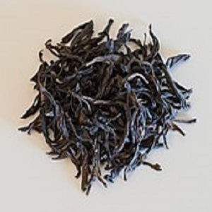

Що таке улун?
Улун — це напівферментований чай, який поєднує характеристики як чорного, так і зеленого чаю. Він має багатий аромат і складний смаковий профіль.
Різновиди улуна
- Те Гуань Інь: Легкий, квітковий аромат, походить з Китаю.
- Да Хун Пао: Один із найцінніших улунів, має глибокий, шоколадний смак.
- Алішань Улун: Вирощується в Тайвані, має молочні ноти.
Як заварювати улун?
- Температура води: 85-90°C
- Час заварювання: 30-60 сек.
- Кількість проливів: 5-7